LabVIEW VI Comparison Report
07:07:01 10/29/2026
First VI: /workspace-base/src/user.lib/_NEVSTOP/Communicable State Machine(CSM)/addons/Logger/CSM - Start File Logger.viSecond VI: /workspace/src/user.lib/_NEVSTOP/Communicable State Machine(CSM)/addons/Logger/CSM - Start File Logger.vi
| Front Panel Overview | ||

|
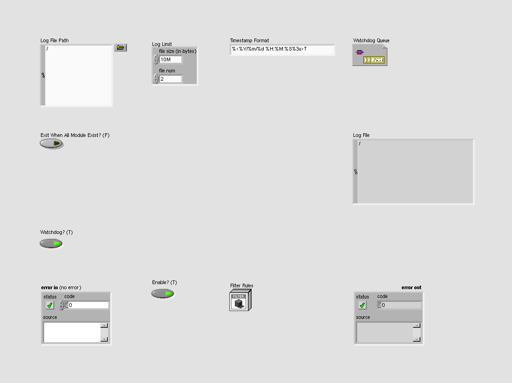 | |
| Block Diagram Overview | ||
|
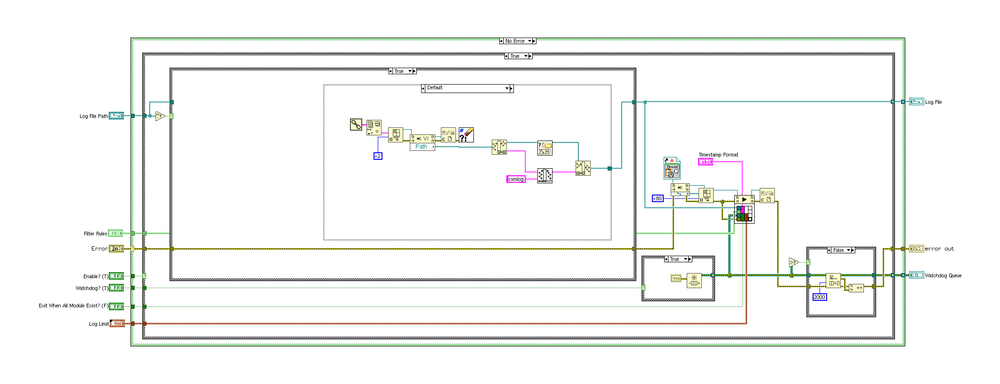 |
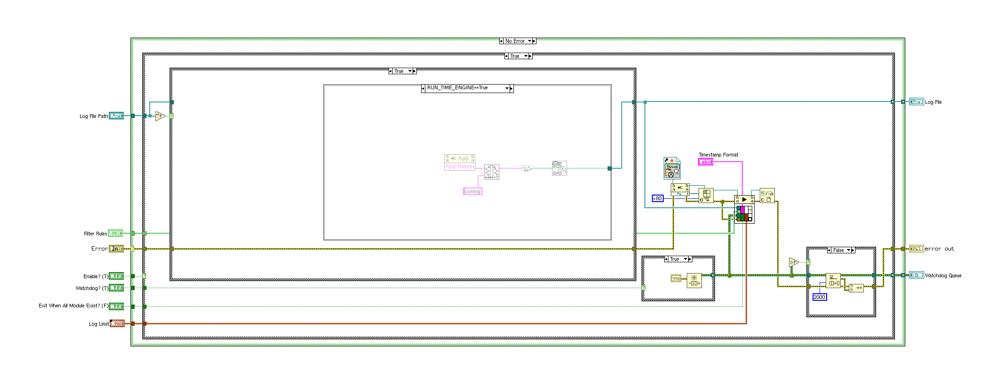 |
- Front Panel
- Front Panel Position/Size
- Block Diagram Functional
- Block Diagram Cosmetic
- VI Attribute
Detailed Information
1. Block Diagram objects
| /workspace-base/src/user.lib/_NEVSTOP/Communicable State Machine(CSM)/addons/Logger/CSM - Start File Logger.vi | /workspace/src/user.lib/_NEVSTOP/Communicable State Machine(CSM)/addons/Logger/CSM - Start File Logger.vi | |
|
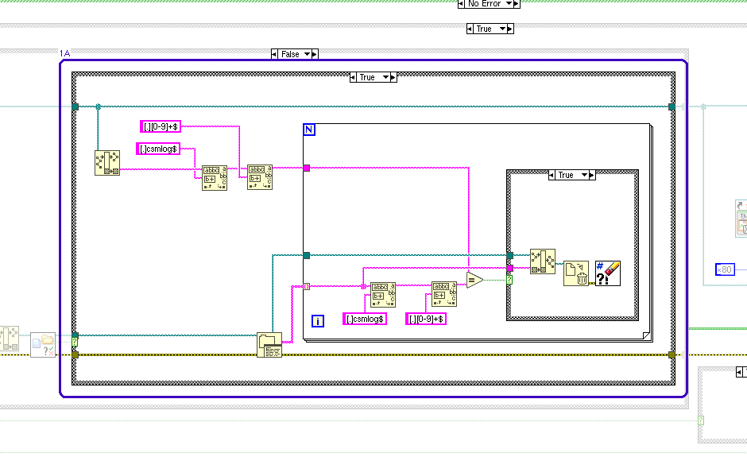 |
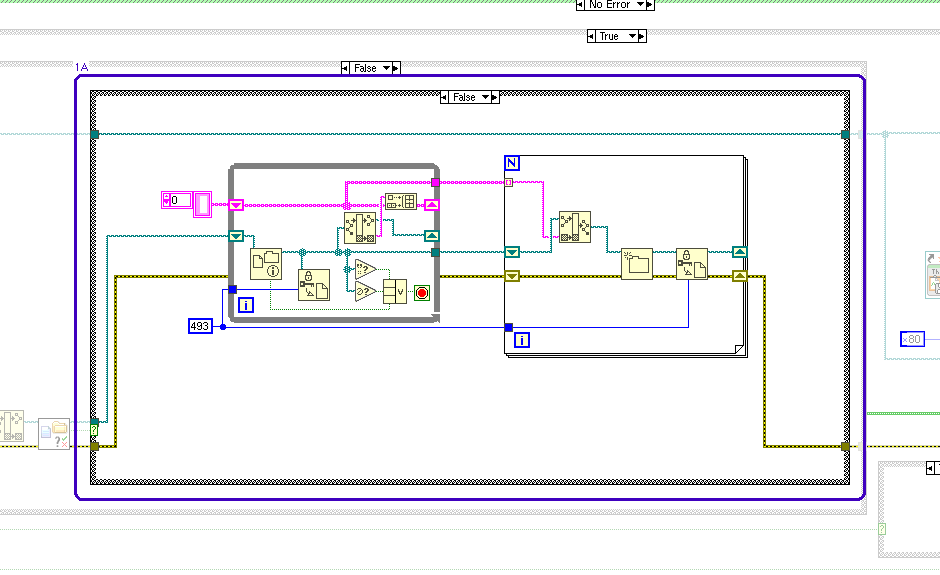 |
- Case Structure - visible case
2. Block Diagram objects
| /workspace-base/src/user.lib/_NEVSTOP/Communicable State Machine(CSM)/addons/Logger/CSM - Start File Logger.vi | /workspace/src/user.lib/_NEVSTOP/Communicable State Machine(CSM)/addons/Logger/CSM - Start File Logger.vi | |
|
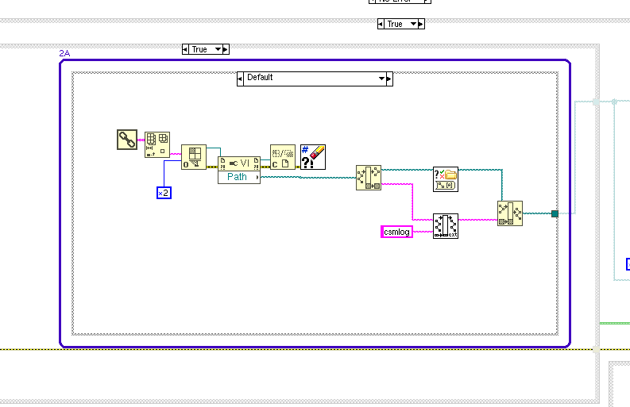 |
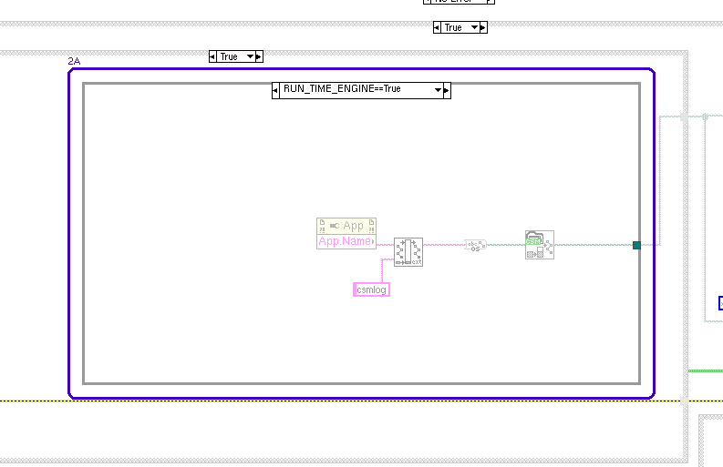 |
- Conditional Disable Structure - visible frame
3. Block Diagram objects
| /workspace-base/src/user.lib/_NEVSTOP/Communicable State Machine(CSM)/addons/Logger/CSM - Start File Logger.vi | /workspace/src/user.lib/_NEVSTOP/Communicable State Machine(CSM)/addons/Logger/CSM - Start File Logger.vi | |
|
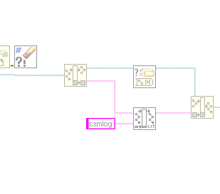 |
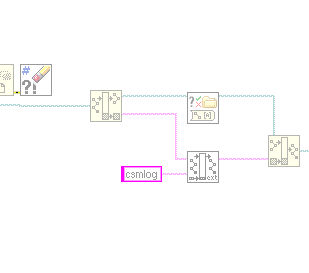 |
- Wire - moved
4. Block Diagram objects
| /workspace-base/src/user.lib/_NEVSTOP/Communicable State Machine(CSM)/addons/Logger/CSM - Start File Logger.vi | /workspace/src/user.lib/_NEVSTOP/Communicable State Machine(CSM)/addons/Logger/CSM - Start File Logger.vi | |
|
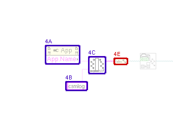 |
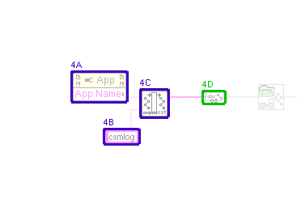 |
- Property Node - moved : changed from "(1220,458)" to "(1176,458)"
- String Constant "new ending (none)" - moved : changed from "(1260,529)" to "(1216,529)"
- SubVI "CSM File Logger.lvlib:Convert File Extension (String)__ogtk.vi" - moved : changed from "(1305,480)" to "(1261,480)"
- SubVI "CSM Shared.lvlib:String to Path.vi" - added at (1338,482)
- String To Path - deleted at (1355,483)
- wiring changes
5. Front Panel - LabVIEW Object
| /workspace-base/src/user.lib/_NEVSTOP/Communicable State Machine(CSM)/addons/Logger/CSM - Start File Logger.vi | /workspace/src/user.lib/_NEVSTOP/Communicable State Machine(CSM)/addons/Logger/CSM - Start File Logger.vi | |
|
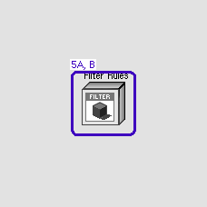 |

|
- LabVIEW Object "Filter Rules" - data value : changed from "(Communicable State Machine.lvlib:LogFilter.lvclass: {Rules => {Global => {CSM => [], LogType => [], State => [], StateType => []}, CSM => {LogType => [], State => [], StateType => []}, PeriodicLog => {Enable => True, Threshold(#/s) => 2.000E+0, CheckPeriod(s) => 1.000E+0}}, Cache => {Global => {CSM => [], State => []}, CSM => {LogTypeMap => <Variant\n: Empty>, StateMap => <Variant\n: Empty>, StateTypeMap => <Variant\n: Empty>}}})" to "(Communicable State Machine.lvlib:LogFilter.lvclass: {Rules => {Global => {CSM => [], LogType => [], State => [], StateType => [], Broadcast => [], UserLog => []}, CSM => {LogType => [], State => [], StateType => [], Broadcast => [], UserLog => []}, PeriodicMessageFilter => {Enable => True, Threshold(#/s) => 2.000E+0, CheckPeriod(s) => 1.000E+0}}, Cache => {Global => {CSM(lower) => [], State(lower) => [], Broadcast(lower) => [], UserLog(lower) => []}, CSM => {LogTypeMap => <Variant\n: Empty>, StateMap => <Variant\n: Empty>, StateTypeMap => <Variant\n: Empty>, BroadcastMap => <Variant\n: Empty>, UserLogMap => <Variant\n: Empty>}}})"
- LabVIEW Object "Filter Rules" - default data value : changed from "(Communicable State Machine.lvlib:LogFilter.lvclass: {Rules => {Global => {CSM => [], LogType => [], State => [], StateType => []}, CSM => {LogType => [], State => [], StateType => []}, PeriodicLog => {Enable => True, Threshold(#/s) => 2.000E+0, CheckPeriod(s) => 1.000E+0}}, Cache => {Global => {CSM => [], State => []}, CSM => {LogTypeMap => <Variant\n: Empty>, StateMap => <Variant\n: Empty>, StateTypeMap => <Variant\n: Empty>}}})" to "(Communicable State Machine.lvlib:LogFilter.lvclass: {Rules => {Global => {CSM => [], LogType => [], State => [], StateType => [], Broadcast => [], UserLog => []}, CSM => {LogType => [], State => [], StateType => [], Broadcast => [], UserLog => []}, PeriodicMessageFilter => {Enable => True, Threshold(#/s) => 2.000E+0, CheckPeriod(s) => 1.000E+0}}, Cache => {Global => {CSM(lower) => [], State(lower) => [], Broadcast(lower) => [], UserLog(lower) => []}, CSM => {LogTypeMap => <Variant\n: Empty>, StateMap => <Variant\n: Empty>, StateTypeMap => <Variant\n: Empty>, BroadcastMap => <Variant\n: Empty>, UserLogMap => <Variant\n: Empty>}}})"
6. VI Attribute - Documentation (VI Properties)
- description text : changed from "Starts the CSM Global Log file recording background thread, which is used to save all execution records in the application to a specified text file. > [!NOTE] CSM File Logger Implementation Principle > > The CSM File Logger retrieves all execution records in the application via the CSM Global Log API and saves them to a specified text file for later analysis and error localization. The file format is a text file with the suffix `.csmlog`, which can be opened using text editing query tools such as Notepad. > [!NOTE] Log File Limits > > To prevent log files from becoming too large due to long-running software, limits are set on log file size and the number of files: > - File Size: The maximum size of a single file in bytes. The default is 10 MB. > - File Num: The maximum number of LOG files. The default is 2. > > When the log file size exceeds the File Size limit, a new file record is created. When the number of log files exceeds the File Num limit, the oldest file record is deleted. > [!NOTE] Global Log Filter Rules > > Global log filter rules allow a category of logs to be filtered out so they do not appear in the global log. > > The following are the three types of log filter rules: > - Global Rules: Apply to all modules meeting the conditions. You can configure the following settings: > - Module Name: All names of the module will be filtered. > - Log Type: Such as state, message, broadcast, module Initialization, and so on. > - State Name: Any module with the state name will be filtered. > - State Type: Type of state, such as internal state, external message, and so on. > - Module Rules: Apply to specific modules. You can configure the following settings: > - Module Log Type: Modules with the specified log types of the module are filtered. > - State Name: Modules with the specified state name are filtered. > - State Type: Modules with the specified state type are filtered. > - Periodic Filter Rules: This rule is currently only effective at the registration point because it is difficult to count numbers at the publication location. > - Whether to enable periodic filtering. > - Threshold (#/s): Periodic filtering threshold. > - CheckPeriod (s): Check window time. Reference Example: `Addons - Logger\CSM Application Running Log Example.vi`. -- Controls -- - Log File Path: Log file path. - Timestamp format: Time format. The default is `%<%Y/%m/%d %H:%M:%S%3u>T`. - Log Limit: Log file size limit. File Size is the maximum size of a single file in bytes. The default is 10 MB. File Num is the maximum number of LOG files. The default is 2. - Filter Rules: Filter rules, configured via the CSM - Convert Filter Rules VI. - Enable? (T): Whether to enable the file recording function. The default is TRUE, which specifies to enable the file recording function. When Enable? is FALSE, the file recording function is disabled. - WatchDog? (T): Whether to enable the WatchDog function. The default is TRUE. When the calling VI exits, the allocated WatchDog resource is automatically released, triggering the recording thread to exit automatically; manually releasing the WatchDog resource will also trigger the recording thread to exit. - Exit When All Module Exist? (F): Automatically exit recording after all CSM modules have exited. The default is FALSE. If TRUE, and the main program is not a CSM, the recording thread will also automatically exit when all running CSM modules exit. -- Indicators -- - Log File: CSM LOG file path. - Watchdog Queue: WatchDog resource handle." to "Starts the CSM Global Log file recording background thread, which is used to save all execution records in the application to a specified text file. > [!NOTE] CSM File Logger Implementation Principle > > The CSM File Logger retrieves all execution records in the application via the CSM Global Log API and saves them to a specified text file for later analysis and error localization. The file format is a text file with the suffix `.csmlog`, which can be opened using text editing query tools such as Notepad. > [!NOTE] Log File Limits > > To prevent log files from becoming too large due to long-running software, limits are set on log file size and the number of files: > - File Size: The maximum size of a single file in bytes. The default is 10 MB. > - File Num: The maximum number of LOG files. The default is 2. > > When the log file size exceeds the File Size limit, a new file record is created. When the number of log files exceeds the File Num limit, the oldest file record is deleted. > [!NOTE] Global Log Filter Rules > > Global log filter rules allow a category of logs to be filtered out so they do not appear in the global log. > > The following are the three types of log filter rules: > - Global Rules: Apply to all modules meeting the conditions. You can configure the following settings: > - Module Name: All names of the module will be filtered. > - Log Type: Such as state, message, broadcast, module Initialization, and so on. > - State Name: Any module with the state name will be filtered. > - State Type: Type of state, such as internal state, external message, and so on. > - Broadcast: Broadcasts with the specified broadcast name will be filtered. Applies to Status Broadcast and Interrupt Broadcast logs. > - User Log: User logs with the specified user log name will be filtered. > - Module Rules: Apply to specific modules. You can configure the following settings: > - Module Log Type: Modules with the specified log types of the module are filtered. > - State Name: Modules with the specified state name are filtered. > - State Type: Modules with the specified state type are filtered. > - Broadcast: Modules with the specified broadcast name are filtered. > - User Log: Modules with the specified user log name are filtered. > - Periodic Filter Rules: This rule is currently only effective at the registration point because it is difficult to count numbers at the publication location. > - Whether to enable periodic filtering. > - Threshold (#/s): Periodic filtering threshold. > - CheckPeriod (s): Check window time. Reference Example: `Addons - Logger\CSM Application Running Log Example.vi`. -- Controls -- - Log File Path: Log file path. - Timestamp format: Time format. The default is `%<%Y/%m/%d %H:%M:%S%3u>T`. - Log Limit: Log file size limit. File Size is the maximum size of a single file in bytes. The default is 10 MB. File Num is the maximum number of LOG files. The default is 2. - Filter Rules: Filter rules, configured via the CSM - Convert Filter Rules VI. - Enable? (T): Whether to enable the file recording function. The default is TRUE, which specifies to enable the file recording function. When Enable? is FALSE, the file recording function is disabled. - WatchDog? (T): Whether to enable the WatchDog function. The default is TRUE. When the calling VI exits, the allocated WatchDog resource is automatically released, triggering the recording thread to exit automatically; manually releasing the WatchDog resource will also trigger the recording thread to exit. - Exit When All Module Exist? (F): Automatically exit recording after all CSM modules have exited. The default is FALSE. If TRUE, and the main program is not a CSM, the recording thread will also automatically exit when all running CSM modules exit. -- Indicators -- - Log File: CSM LOG file path. - Watchdog Queue: WatchDog resource handle."